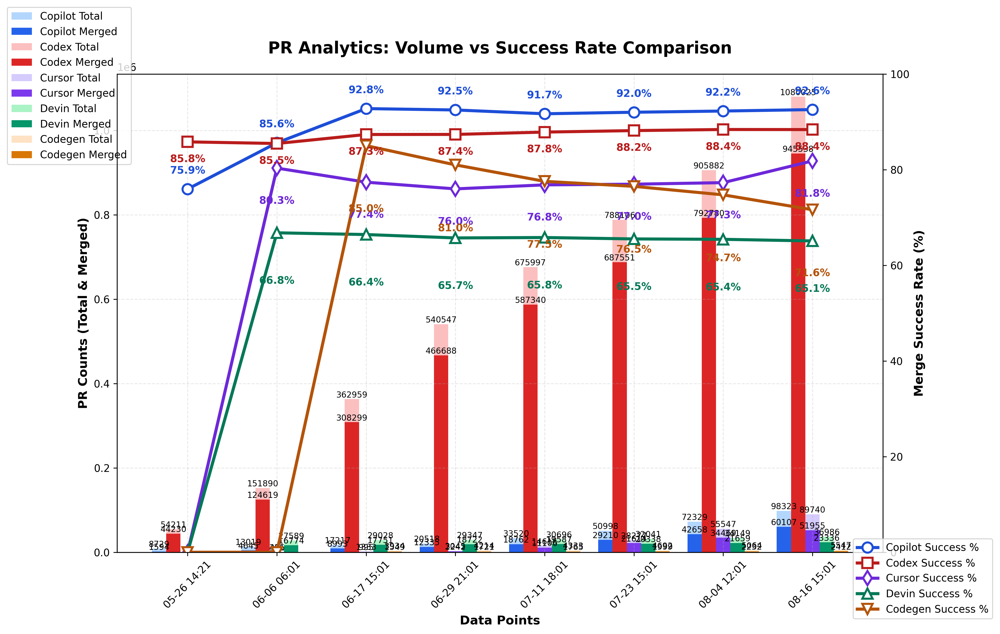

PR Analytics: Volume vs Success Rate
Tracking Copilot vs Codex PR performance
Data sources
Explore the GitHub search queries used:
All Copilot PRs
:
is:pr head:copilot/
Merged Copilot PRs
:
is:pr head:copilot/ is:merged
All Codex PRs
:
is:pr head:codex/
Merged Codex PRs
:
is:pr head:codex/ is:merged
PR Analytics Chart

Current Statistics
Project
Total PRs
Merged PRs
Merge Rate
Copilot
10,488
2,897
27.62%
Codex
71,170
58,918
82.78%